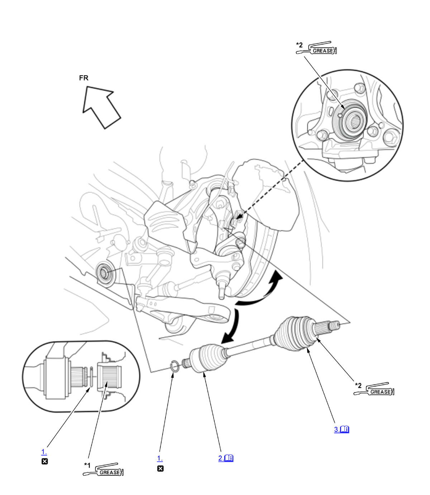
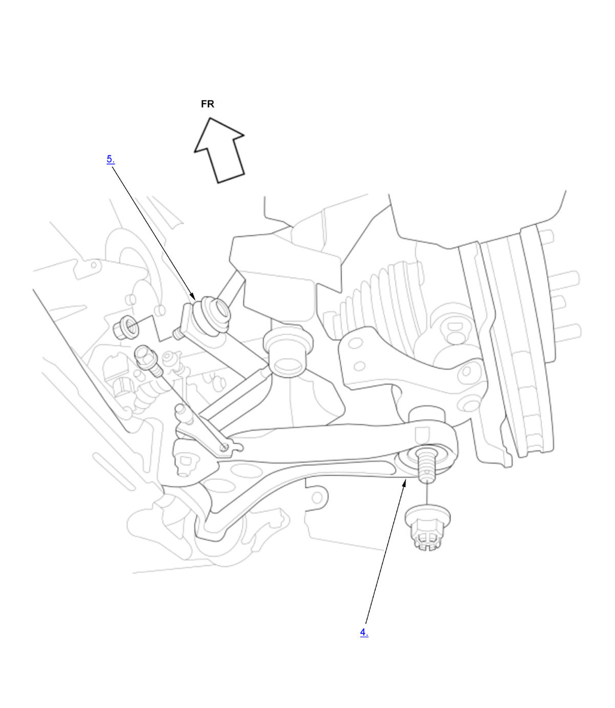
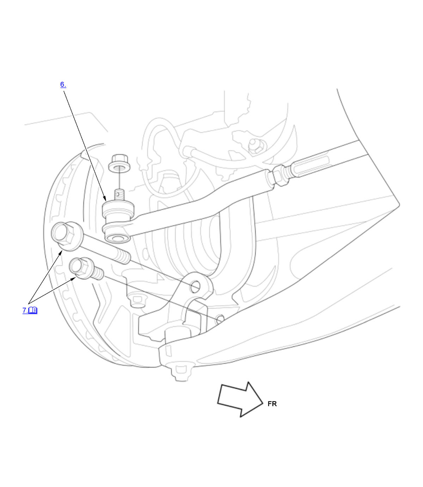
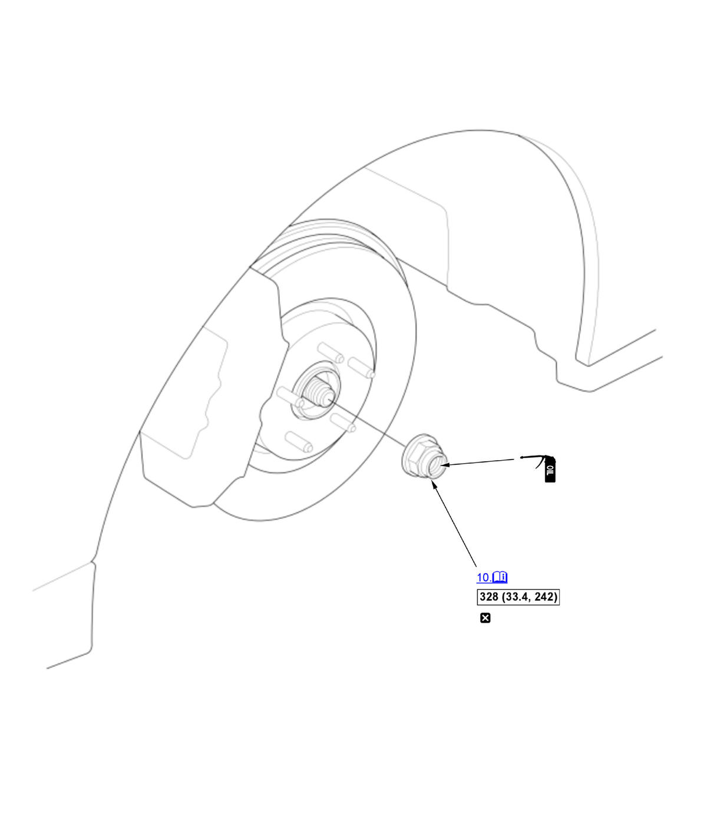

Front Driveshaft Removal and Installation (K20C1 (M/T)) (2017 2018 2019 2020 2021): Installation: Procedure
NOTE:
Numbered call-outs in figure pertain to list numbers in following procedure.

Courtesy of HONDA, U.S.A., INC. |
Detailed information, notes, and precautions |
 |
Replace |
*1 |
Apply 2.0-3.0 g (0.071-0.106 oz) of super high temp urea grease (P/N 08798-9002) or equivalent to the whole splined surface. |
| *2 |
Apply about 3.0 g (0.106 oz) of Molykote M77 paste (P/N: 08798- 9010) or equivalent to the contact area. |
NOTE:
Numbered call-outs in figure pertain to list numbers in following procedure.

Courtesy of HONDA, U.S.A., INC.
NOTE:
Numbered call-outs in figure pertain to list numbers in following procedure.

Courtesy of HONDA, U.S.A., INC.
NOTE:
Numbered call-outs in figure pertain to list numbers in following procedure.
Fig 4: Front Driveshaft Components With Torque Specifications For Installation (K20C1 - M/T - 2017-21) (4 Of 4)

Courtesy of HONDA, U.S.A., INC. |
Detailed information, notes, and precautions |
 |
Torque: N.m (kgf.m, lbf.ft) |
|
Replace |
 |
Apply a small amount of engine oil to the seating surface of a new spindle nut. |
- Inboard Joint Set Ring - Install (Both Side)
- Inboard Joint - Connect
1. Left driveshaft: Clean the areas where the driveshaft contacts the differential thoroughly with solvent, then dry them compressed air. NOTE: Do not wash the rubber parts with solvent.
2. Insert the inboard end (A) of the driveshaft into the differential (B) or the intermediate shaft (C) until the set ring (D) locks in the groove (E).
- Left driveshaft: Insert the driveshaft horizontally to prevent damaging the oil seal.
- Right driveshaft: After applying grease, remove the grease from the splined grooves at intervals of 2-3 splines and from the set ring groove so that air can bleed from the intermediate shaft.
- Outboard Joint - Connect
NOTE: The paste helps prevent noise and vibration.
- Lower Arm Ball Joint - Connect (Both Side)
- Lower Stabilizer Link - Connect (Both Sides)
- Tie-Rod End Ball Joint - Connect (Both Sides)
- Knuckle Mounting Bolt - Install (Both Side)
NOTE: Do the knuckle mounting bolt installation procedure.
- Front Suspension Stroke Sensor - Install (Both Sides)
- Engine Undercover - Install
- Spindle Nut - Install (Both Side)
NOTE: Do not use a stake, punch or screwdriver in the brake rotor to keep it from moving. Have an assistant press on the brakes instead while you are tightening. 1. Use a drift to stake the spindle nut shoulder (A) against the driveshaft.
- Front Wheel - Install (Both Side)
- Driveshaft - After Install Check
1. Turn the wheel by hand, and make sure there is no interference between the driveshaft and surrounding parts. - Transmission Fluid - Refill
- Wheel Alignment - Check
- Test Drive - Check